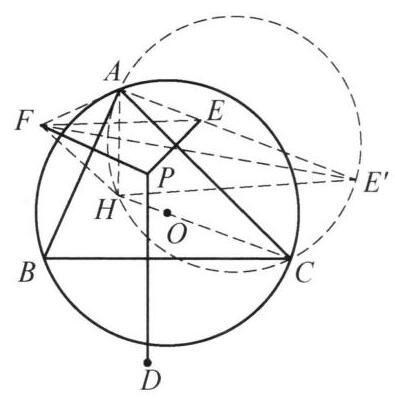

93 例 8：垂心与外心圆幂恒等式
93.1 题目
设锐角 \triangle {ABC} 的外心为 O ,垂心为 H,\triangle {ABC} 内任一点 P 关于 {BC} , {CA},{AB} 的对称点分别为 D, E, F . 证明:
\frac{{S}_{\triangle {HDE}}}{{S}_{\triangle {HDF}}} = \frac{{S}_{\triangle {OAB}}}{{S}_{\triangle {OAC}}}.
93.2 参考解答
如图 6-9,设射线 {AE} 与圆 {AHC} 交于点 {E}^{\prime } . 由 {AP} = {AF} = {AE} 及 \angle {EAF} = 2\angle {BAC} ，得 \angle {AEF} = \; {90}^{ \circ } - \angle {BAC} = \angle {ACH} = \angle {A{E}^{\prime }H} ，于是有 {EF}// \; {E}^{\prime }H ，因此由正弦定理，得
{S}_{\triangle {HEF}} = {S}_{\triangle E{E}^{\prime }F} = \frac{1}{2}{EF} \cdot E{E}^{\prime } \cdot \sin \angle {FE}{E}^{\prime }
= \frac{1}{2}{EF} \cdot E{E}^{\prime } \cdot \sin \angle {FEA}
= \frac{1}{2}{AF} \cdot E{E}^{\prime } \cdot \sin \angle {EAF}
= \frac{1}{2}{AE} \cdot E{E}^{\prime } \cdot \sin \angle {EAF}
= \frac{1}{2}{AE} \cdot E{E}^{\prime } \cdot \sin {2A}
= \frac{1}{2} \cdot {I}_P \cdot \sin {2A},

图 6-9
其中 {I}_P = {AE} \cdot E{E}^{\prime } 是点 P 对圆 O 的幂的绝对值. (因为 P 和 {E}^{\prime } 关于 {AC} 对称,圆 O 和 \triangle {ACH} 的外接圆也关于 {AC} 对称,所以 P 对圆 O 的幂等于 E 对 \triangle {AHC} 外接圆的幂,最后还是要化到 P 来处理. )
同理有
{S}_{\triangle {HDE}} = \frac{1}{2} \cdot {I}_P \cdot \sin {2C},
{S}_{\triangle {HDF}} = \frac{1}{2} \cdot {I}_P \cdot \sin {2B}.
设 \triangle {ABC} 的外接圆半径为 R ,则
{S}_{\triangle {OAB}} = \frac{1}{2}{R}^2\sin {2C},
{S}_{\triangle {OAC}} = \frac{1}{2}{R}^2\sin {2B},
{S}_{\triangle {OBC}} = \frac{1}{2}{R}^2\sin {2A},
所以
\frac{{S}_{\triangle {HDE}}}{{S}_{\triangle {HDF}}} = \frac{{S}_{\triangle {OAB}}}{{S}_{\triangle {OAC}}}.
原问题得证.
注: 通过等面积转化 {S}_{\triangle {HDE}} ,将其表示成容易处理的形式是解决本题的关键.
93.3 解题思路与分析
教材和竞赛书在排版时，往往喜欢“倒果为因”——把作者最后才发现的结论当成第一步的辅助线写出来，从而拆掉了思考的脚手架。
要把这个“神来之笔”还原成自然的人类思维，我们可以按从目标倒推、猜想结构、等积转化、发现共圆这四个步骤来复盘，同时修正书中一处绕弯的推导和一处笔误。
93.3.1 第一步：执果索因——看穿目标式子的“潜台词”
题目要证的是： \frac{S_{\triangle HDE}}{S_{\triangle HDF}} = \frac{S_{\triangle OAB}}{S_{\triangle OAC}}
我们先看右边：由于 OA = OB = OC = R，且圆心角 \angle AOB = 2C，\angle AOC = 2B，右边其实就是： \frac{S_{\triangle OAB}}{S_{\triangle OAC}} = \frac{\frac{1}{2}R^2 \sin 2C}{\frac{1}{2}R^2 \sin 2B} = \frac{\sin 2C}{\sin 2B}
再观察左边的脚标对称性： * D, E 是 P 关于 BC, CA（夹着顶点 C 的两边）的对称点，面积 S_{\triangle HDE} 恰好对应 \sin 2C； * D, F 是 P 关于 BC, AB（夹着顶点 B 的两边）的对称点，面积 S_{\triangle HDF} 恰好对应 \sin 2B； * 那么按轮换对称性，E, F 是 P 关于 CA, AB（夹着顶点 A 的两边）的对称点，面积 S_{\triangle HEF} 必然对应 \sin 2A！
因此，解题者在动笔之前就已经明确了核心目标：单独计算 S_{\triangle HEF}，把它化简成“（某个关于 A,B,C 完全对称的公因式）\times \sin 2A”的形式。只要能算出这个式子，轮换一下字母，比值自然就出来了。
93.3.2 第二步：极端情况探路——为什么那个公因式一定是“点幂 I_P”？
那个只与点 P 和 \triangle ABC 整体有关、对三个顶点地位平等的“公因式”会是什么呢？竞赛生通常会做一个思想实验：如果点 P 运动到特殊位置——比如外接圆 \odot O 上，会发生什么？
平面几何中有一个非常著名的结论（斯坦纳定理，即西姆松线的直接推论）： > 外接圆 \odot O 上任意一点 P 关于 \triangle ABC 三边的对称点 D, E, F 必三点共线，且这条直线一定经过垂心 H！
这意味着：一旦点 P 落到外接圆 \odot O 上，H, D, E, F 四点共线，\triangle HEF 的面积就会瞬间变成 0！
在几何中，什么量是对 A, B, C 完全对称的、量纲恰好是“长度的平方”（面积量纲），而且当点 P 在圆 O 上时恰好等于 0？只有点 P 对圆 O 的幂 I_P = |R^2 - OP^2|！
这就是为什么作者从一开始就知道要把面积往“圆幂定理”上靠。
93.3.3 第三步：等积变形——如何把讨厌的垂心 H 挪走？
有了目标 S_{\triangle HEF} = \frac{1}{2} I_P \sin 2A，接下来看图形。
在 \triangle HEF 中，E, F 是 P 关于 AC, AB 的对称点，这说明它们围绕顶点 A 的性质极其漂亮： * AE = AF = AP * \angle EAF = 2\angle BAC = 2A
也就是说，等腰 \triangle AEF 的面积我们是直接知道的： S_{\triangle AEF} = \frac{1}{2} AE \cdot AF \sin 2A = \frac{1}{2} AE^2 \sin 2A 你看，目标里的 \frac{1}{2}\sin 2A 在 \triangle AEF 里已经是现成的了！
现在唯一的障碍是：我们要算的是 \triangle HEF，它的第三个顶点是讨厌的 H，而不是可爱的 A。怎么把 \triangle HEF 转化到跟 \triangle AEF 产生联系？
既然 \triangle HEF 和 \triangle AEF 共用底边 EF，最自然的几何操作就是拉窗帘（等积变换）：保持底边 EF 不变，过点 H 作 EF 的平行线，把顶点 H 平移到直线 AE 上去，设交点为 E'！
💡 破除书中的绕弯推导： 书里用了整整 5 行正弦定理来算 S_{\triangle EE'F}，其实完全没必要那么绕。你看图 6-9：因为点 E' 在直线 AE 上，\triangle EE'F 和等腰 \triangle AEF 共用顶点 F，且底边 EE' 和 AE 在同一条直线上（两三角形同高）！ 同高三角形的面积比就等于底边之比，所以一步就能写出： S_{\triangle HEF} = S_{\triangle EE'F} = \frac{EE'}{AE} \cdot S_{\triangle AEF} = \frac{EE'}{AE} \cdot \left(\frac{1}{2} AE^2 \sin 2A\right) = \frac{1}{2} (AE \cdot EE') \sin 2A
93.3.4 第四步：水到渠成——为什么辅助线一上来就写“圆 AHC”？
顺着第三步的思路，我们已经算出了 S_{\triangle HEF} = \frac{1}{2} (AE \cdot EE') \sin 2A。接下来的问题只是：由 HE' \parallel EF 交 AE 于 E' 造出来的这个点 E'，到底是个什么点？
我们去算一下角度： 1. 因为是我们主动构造的 HE' \parallel EF，所以同位角相等：\angle AE'H = \angle AEF。 2. 在等腰 \triangle AEF 中，顶角 \angle EAF = 2A，所以底角 \angle AEF = 90^\circ - A。 3. 而在原 \triangle ABC 中，H 是垂心（CH \perp AB），所以在直角三角形中天然有 \angle ACH = 90^\circ - A。 4. 于是神奇的事情发生了：\angle AE'H = 90^\circ - A = \angle ACH！这说明 A, H, C, E' 四点共圆（点 E' 必然落在 \triangle AHC 的外接圆上）！
一旦发现 E' 在圆 AHC 上，整道题的拼图就彻底合上了： * A 和 E' 都在圆 AHC 上，直线 AEE' 是圆 AHC 的一条割线，所以乘积 AE \cdot EE' 恰好就是点 E 对圆 AHC 的幂！ * 根据垂心的经典性质（垂心 H 关于 AC 的对称点在外接圆 O 上），圆 AHC 与外接圆 O 关于 AC 对称。 * 同时，点 E 与点 P 也关于 AC 对称。 * 把“点 E 和圆 AHC”一起沿着 AC 翻折过去，位置关系完全不变，所以“点 E 对圆 AHC 的幂 AE \cdot EE'”就严格等于“点 P 对圆 O 的幂 I_P”！
⚠️ 顺便指出书中的一处笔误： 书中括号里写的是“（因为 P 和 E' 关于 AC 对称……）”，这里印错了，多打了一个撇号，实际上是“因为 P 和 E 关于 AC 对称”（E' 关于 AC 的对称点是射线 AP 与圆 O 的交点）。这个排版笔误很容易让读者在核对对称关系时一头雾水。
93.3.5 思维顺序 vs 书写顺序的对比
之所以觉得这个证明像“天外飞仙”，是因为作者把探索的过程倒过来写成了公理化的证明：
| 阶段 | 真实的探索思考顺序（人类怎么想出来的） | 书上的呈现顺序（作者怎么写出来的） |
|---|---|---|
| 1 | 想算 S_{\triangle HEF}，发现等腰 \triangle AEF 面积极好算（含 \sin 2A）。 | 直接天降神兵：作圆 AHC 交射线 AE 于 E'。（读者懵：为什么要画这个圆？） |
| 2 | 为了利用 \triangle AEF，过 H 作 EF 的平行线交 AE 于 E'，把 \triangle HEF 等积变形为与 \triangle AEF 共高的 \triangle EE'F，面积化为 \frac{1}{2} AE \cdot EE' \sin 2A。 | 倒推角度 \angle AEF = 90^\circ - A = \angle ACH = \angle AE'H，从而证明 EF \parallel E'H。 |
| 3 | 追问 E' 的位置：由平行算出 \angle AE'H = 90^\circ - A = \angle ACH，惊喜地发现 A, H, C, E' 四点共圆！ | 利用平行做等积转化，再用正弦定理绕一圈算出 \frac{1}{2} AE \cdot EE' \sin 2A。 |
| 4 | 由四点共圆认出 AE \cdot EE' 是点 E 对圆 AHC 的幂，再由关于 AC 的对称性化归为点 P 对圆 O 的幂 I_P。 | 说明 AE \cdot EE' = I_P，轮换对称得出结论。 |
把第 1 步和第 3 步调换回原本的思考顺序，整个构造就是顺理成章的了。
93.4 分步证明
93.4.1 步骤 0：Step 0：题设条件与几何构型
设锐角 △ABC 的外心为 O，垂心为 H。△ABC 内部任取一点 P，其关于三边 BC, CA, AB 的轴对称点分别为 D, E, F。求证目标：S△HDE / S△HDF = S△OAB / S△OAC。
93.4.2 步骤 1：Step 1：构造圆 ⊙(AHC) 与割线交点 E’
垂心 H 关于边 AC 的对称点在外接圆 ⊙O 上，故圆 ⊙(AHC) 恰为 ⊙O 关于直线 AC 的对称圆，其半径亦为 R。延长射线 AE 与圆 ⊙(AHC) 交于点 E’。
93.4.3 步骤 2：Step 2：圆周角平移导出 EF ∥ E’H
由轴对称得 AP = AF = AE，顶角 ∠EAF = 2∠BAC = 2A，故等腰底角 ∠AEF = 90° - A。由高线知 ∠ACH = 90° - A；又在圆 ⊙(AHC) 中，同弧圆周角 ∠AE’H = ∠ACH = 90° - A。同位角相等得出：EF ∥ E’H！
93.4.4 步骤 3：Step 3：同底等高平行割补面积转换
因为 EF ∥ E’H，点 H 与点 E’ 到直线 EF 的垂直高度严格相等。利用公共底边 EF 上的平行滑移变形，立即得到面积等式：S△HEF = S△EE’F。将垂心三角形成功转化到射线割线上的三角形！
93.4.5 步骤 4：Step 4：圆幂不变性求解 S△HEF
由正弦定理：S△EE’F = ½ EF · EE’ · sin ∠FEA = ½ AE · EE’ · sin 2A。核心几何洞察：E 与圆 ⊙(AHC) 是点 P 与外接圆 ⊙O 关于边 AC 的轴对称图形！因此割线幂之积 AE · EE’ 严格等于点 P 对圆 ⊙O 的圆幂绝对值 IP = |R² - OP²|！故 S△HEF = ½ · IP · sin 2A。
93.4.6 步骤 5：Step 5：三边对称轮换导出面积闭式
完全同理，关于边 BC（对应顶角 C）与边 AB（对应顶角 B）分别进行平行割补与圆幂映射，立即得到：S△HDE = ½ · IP · sin 2C，S△HDF = ½ · IP · sin 2B。两式作比消去圆幂因子：S△HDE / S△HDF = sin 2C / sin 2B。
93.4.7 步骤 6：Step 6：外心三角形面积与最终命题得证
在外接圆 ⊙O 中，半径 OA = OB = OC = R。圆心角 ∠AOB = 2C, ∠AOC = 2B。故外心三角形面积为：S△OAB = ½ R² sin 2C，S△OAC = ½ R² sin 2B。两式作比消去 ½ R² 同样得到 sin 2C / sin 2B！综合结论：S△HDE / S△HDF = S△OAB / S△OAC，原命题完美得证！